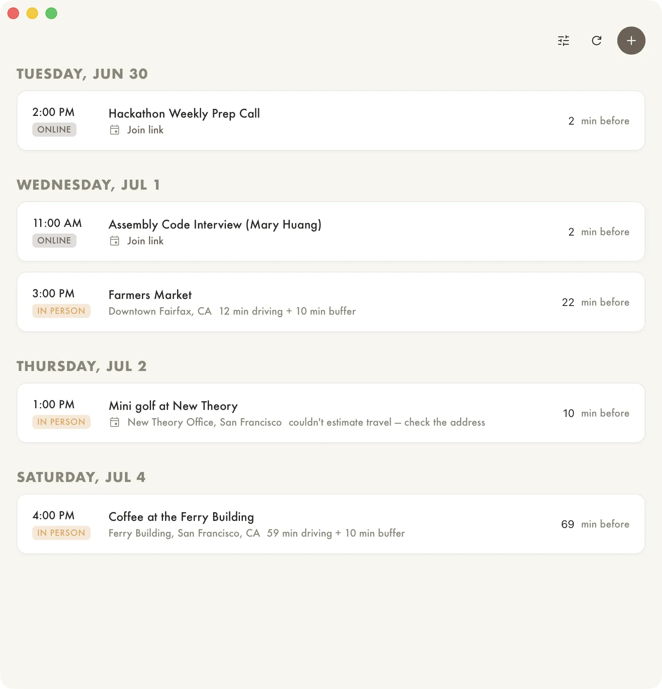

Calendar
V.0.2
I made my own calendar app, largely motivated by being able to finally get the notifications to actually work how I want.
I live a bit far from the city, so for any in person event, I need to leave over an hour ahead of time. In the background, it fetches the location and gets a drive time estimate to set the right notification time. Plus there's a global "buffer time" setting. In the future I want it to also look up parking info, and maybe compare driving to taking the ferry.
This fetches from my iCal, which fetches from my Google Calendar, so no oauth required.